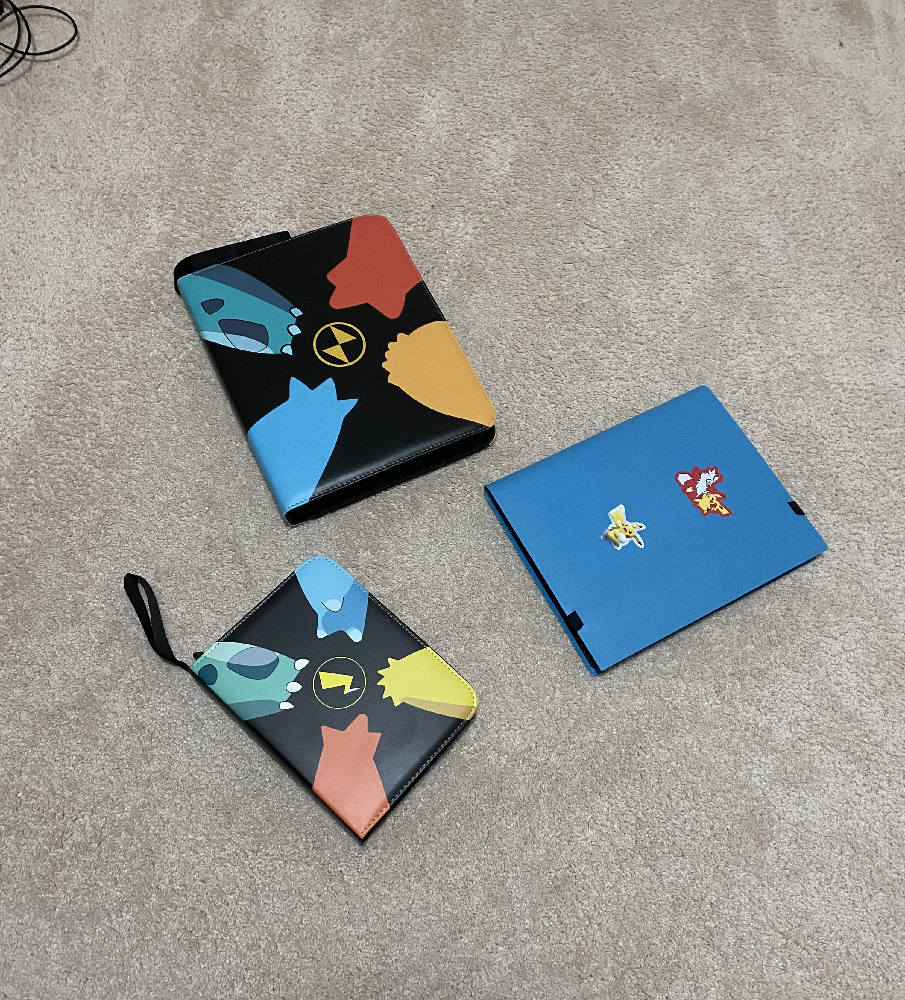
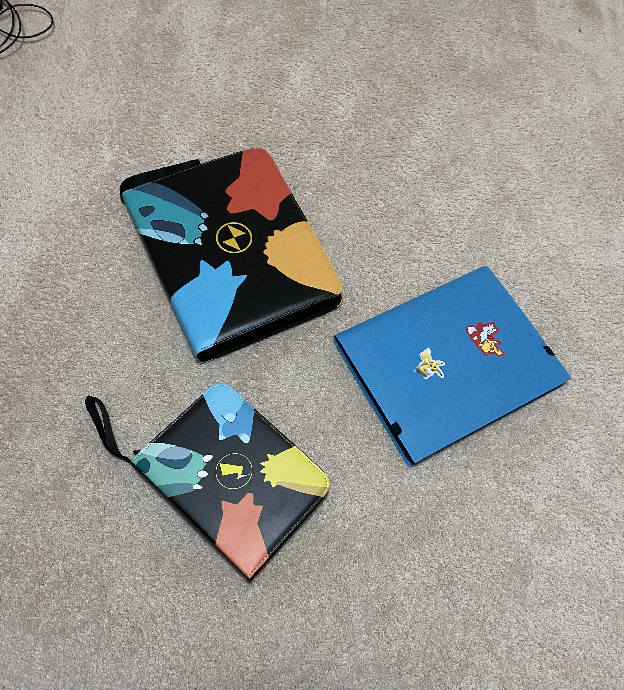

Just a passion project I do on the side.
Though still in progress, my proudest creation is
the Machiavellian Pursuits game, where players battle
for victory through manipulation and unstable alliances.
Having previously created the game myself, I first
printed this set of cards out to play with a group of
friends in person, but we quickly realized that it made
for an ambitious but fulfilling programming project. After
we clarified the rules and beta-tested the game, we took
to programming and decided on using ReactJS for the
frontend, and TypeScript for the backend.
We're a team of five friends, 3 of which (including myself) are
developers and 2 are artists. This endeavour has taught me to think like a leader and project
manager as well as a developer; as the creator and being most
familiar with the details of the game, I am responsible for
directing the creative process as well as specifying the requirements
on the technical side. As of right now, the game is incomplete.
However, we have completed implementation of rooms (sessions) using
Socket.io, made significant headway on the graphics and backend, and have
finished documentation (including rules and gameplay guidelines) and plans
for user interface and game logic. When the game is finished, we will deploy
it publicly on a web server where it can be played and enjoyed from anywhere.
find out more!
 
